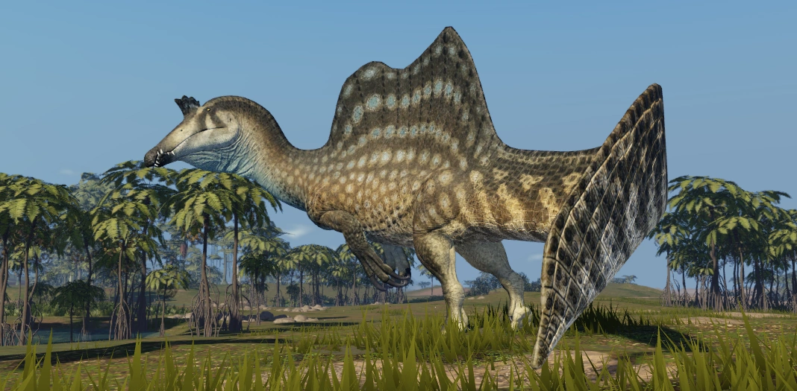

Spinosaurus-Cretaceous Archipelago
Espinossauro (nome científico: Spinosaurus; cujo nome significa Lagarto Espinho) foi um gênero de dinossauro espinossaurídeo que viveu durante o Cenomaniano do período Cretáceo, entre 100 e 94 milhões de anos atrás, principalmente na região que é hoje o Norte da África[2]. Este gênero foi conhecido a partir de vestígios egípcios descobertos em 1912 e descritos em 1915 pelo paleontólogo Ernst Stromer. Esses primeiros vestígios foram destruídos na Segunda Guerra Mundial, mas material adicional foi encontrado no início do século XXI. O S. aegyptiacus é a espécie-tipo do gênero, embora haja o S.mirabilis,uma espécie descrita formalmente em fevereiro de 2026 do Níger e S. maroccanus como uma espécie em potencial. Sobre seus sinônimos, o gênero Sigilmassasaurus já foi sinonimizado por alguns autores como um S. aegyptiacus, embora outros pesquisadores proponham que seja um gênero distinto, outro possível sinônimo é o Oxalaia da Formação Alcântara no Brasil, como um sinônimo não totalmente crescido de S. aegyptiacus.
O Espinossauro foi um dos maiores dinossauros terópodes que já existiram, com as últimas estimativas sugerindo que poderia ter medido em torno de 14-18 metros de comprimento e 6,3 metros de altura, podendo ter pesado algo em torno de 7,4-20 toneladas[3]. O crânio do Espinossauro era longo, baixo e estreito, similar ao de crocodilianos modernos e tinha dentes cônicos retos sem serrilhas. Tinha membros anteriores (braços) grandes, bem desenvolvidos e com três dedos, nos quais portavam grandes garras, especialmente a do primeiro dígito. Possuía grandes prolongações espinhais dos processos de sua coluna vertebral, que cresciam a pelo menos 1,65 metro em comprimento e que, provavelmente, tinha pele conectando-as, formando uma vela dorsal, o que lhe conferiu o nome de "lagarto espinho". Os ossos da pelve do Espinossauro eram reduzidos, e suas pernas eram curtas em comparação com o tamanho de seu corpo. Sua cauda longa e estreita era aprofundada por altas e finas espinhas neurais, formando uma cauda flexível e com uma estrutura semelhante a um remo.
O Espinossauro é conhecido por ter tido uma alimentação piscívora e a maioria dos cientistas acredita que ele caçava presas tanto terrestres quanto aquáticas. As evidências sugerem que era semiaquático, mas a extensão de sua capacidade de nado é algo que vem sendo bastante contestado. Múltiplas funções para sua vela dorsal foram sugeridas, incluindo termorregulação e exibição, tanto para intimidar rivais quanto para atrair parceiros. Viveu em uma ambiente úmido de planícies de maré e florestas de mangue ao lado de muitos outros dinossauros, bem como peixes, crocodilomorfos, lagartos, tartarugas, pterossauros e plesiossauros.
Esse é o Spinosaurus:

Spinosaurus Maroccanus-Cretaceous Archipelago
Spinosaurus Marocannus é consideriado o mesmo que Spinossaurus Aegyptiacus porque os fósseis não mostram diferenças claras o suficiente para separar uma nova espécie, sendo as variações vistas como diferenças individuais ou de crescimento dentro do próprio Spinosaurus.
Esse é o Spinossaurus Maroccanus:

Carcharodontosaurus-Cretaceous Archipelago
Carcharodontosaurus (em português, carcarodontossauro[1] do latim "lagarto com dente de tubarão") foi um gênero de dinossauro terópode que viveu durante o período Cretáceo no Nordeste da África. Atualmente só temos duas espécies conhecidas, a espécie-tipo C. saharicus e a espécie C. iguidensis. O seu nome foi inspirado no gênero científico Carcharodon, mesmo gênero que inclui o tubarão-branco.
Carcharodontosaurus é um dos maiores dinossauros terópodes conhecidos, com C. saharicus atingindo 12–12,5 metros de comprimento e aproximadamente 6–6,2 toneladas de massa corporal. Tinha um crânio grande e de construção leve com uma tribuna triangular. Suas mandíbulas eram revestidas com dentes afiados, recurvados e serrilhados que guardam semelhanças impressionantes com os do grande tubarão branco, inspiração para o nome. Embora gigante, seu crânio ficou mais leve por fossas e fenestras muito expandidas, mas também o tornou mais frágil que o dos tiranossaurídeos. Os membros anteriores eram minúsculos, enquanto os membros posteriores eram robustos e musculosos. Como a maioria dos outros terópodes, tinha uma cauda alongada para se equilibrar.
O Carcharodontosaurus viveu na África, em locais onde hoje estão a Argélia (local da descoberta dos primeiros fósseis, em 1927), o Egito e a Tunísia, por exemplo. Existem sinais da presença de carcarodontossaurideos também na América do Sul, corroborando a teoria que os atuais continentes África e América do Sul tenham sido um único espaço em parte da era Mesozóica, o Gondwana, e que começaram sua separação há cerca de 135 milhões de anos. Muitos terópodes gigantescos são conhecidos no Norte da África durante este período, incluindo ambas as espécies de Carcharodontosaurus, bem como o espinossaurídeo Spinosaurus e o ceratossauro Deltadromeus. Isto sugere que houve divisão de nicho entre os diferentes grupos, com o Spinosaurus sendo piscívoro, enquanto o Carcharodontosaurus consumiria dinossauros saurópodes, agindo como o predador alfa em seu paleoambiente.
Esse é o Carcharodontosaurus: